素数判定(the Recognition of Primes)是一个数论中十分基本,却又趣味盎然的问题.判定一个整数是否是素数,最为朴素的想法是直接利用素数的定义,用小的素数去一一试除,如果能整除的话,那就能确定无疑为合数了.统计表明,大约有76%的奇数有小于100的素因子,可见这种最平凡的方法有时十分有效.
相比整数的因子分解，素数判定一直以来被认为是较为容易的问题。2002年三位印度计算机科学家Agrawal，Kayal，Saxena[1]找到了素数判定的多项式算法（被称为AKS算法），时间复杂度为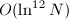。AKS算法在理论上有重要的意义，不过实践中还要更多地考虑效率问题。实践中的素数检测方法大致分为两类，一类是确定性的，例如Lehmer  检测，Lucas 检测，椭圆曲线素性证明(ECPP)等等，当输出结果为“素数”时，能够保证被检测数一定为素数；另一类是概率性的，如Rabin-Miller检测，Baillie-PSW检测等等，当输出结果为“素数”时，仅以一定的高概率保证被检测数的素性。不过概率性检测一般要比确定性检测快得多。
检测，Lucas 检测，椭圆曲线素性证明(ECPP)等等，当输出结果为“素数”时，能够保证被检测数一定为素数；另一类是概率性的，如Rabin-Miller检测，Baillie-PSW检测等等，当输出结果为“素数”时，仅以一定的高概率保证被检测数的素性。不过概率性检测一般要比确定性检测快得多。
APRCL方法将Fermat类型的想法运用到分圆域中,最先由Adleman,Pomerance,Rumely[2]提出,后经Cohen,Lenstra[3]的改进，时间复杂度为“近似”多项式的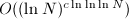，其中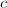为一个常数。椭圆曲线素数证明最早由Goldwasser,Kilian[4]提出，后经Atikin，Morain[5]改进和实现，平均时间复杂度达到了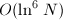。这两种方法已经成为目前实践上最快的确定性检测方法，并在密码学等领域有重要的应用。鉴于我们的目的，不能用太多篇幅来介绍这两种方法，详细可参阅文献[6].
有些素数判定方法严格来说应当是合性检测(Compositeness Test),这类方法总可以有效地把素数判定出来,而有可能把一个合数判定为素数.也就是说,此类方法判定一个数为合数总是准确无误的,而“漏网的”,即无法判定的合数往往称为伪素数(Pseudoprimes).
 Fermat检测
Fermat检测
几乎所有素数检测的想法之基石均为著名的Fermat小定理,即若 为素数,
为素数, ,则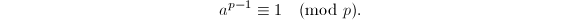
,则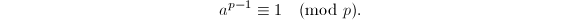
由此我们得到最简单的检测算法-Fermat合性检测。
在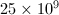以下,有21853个对于基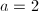的Fermat伪素数[7],如果对其再进行基为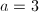的检测的话,伪素数将还剩下4709个,对于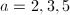有2552个,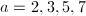有1770个.
运用Fermat检测的关键是如何快速计算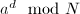.求幂运算采取二进算法1,2,可以使用Fermat检测的算法复杂度降到平均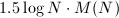(其中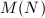表示乘法运算的复杂度),已经为多项式阶的算法了. 使用Montgomery约化算法3可以更进一步地提高速度。
Camichael数是看起来比Fermat伪素数条件更“苛刻”的一类数.
也就是说,Camichael数都将会是Fermat检测的“漏网之鱼”.最小的Camichael数的例子是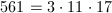.在以下一共有2163个Camichael数.(它比对基的Fermat伪素数还要来得多的原因是,如果恰巧 有2,3,5,7的因子,便可以是Camichael数而非Fermat伪素数)
有2,3,5,7的因子,便可以是Camichael数而非Fermat伪素数)
Euler检测
Euler检测基于Euler的二次剩余定理,即若为奇素数,,则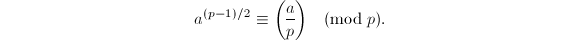其中 是Legendre符号.
是Legendre符号.
 ,则输出
,则输出对于Euler伪素数和强伪素数均不会出现类似Fermat伪素数的情况,也就是说,只要测试的基 足够多,最终总可以将和数和素数分辩开来.以下只有13个同时为对基2,3,5的强伪素数.
足够多,最终总可以将和数和素数分辩开来.以下只有13个同时为对基2,3,5的强伪素数.
Lehmer 型检测
有时候的素性很难判定,而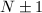的分解却很容易得到.这一节的方法便是依赖于的素因子分解.
为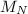的一个阶元素,而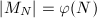( 为Euler函数),从而有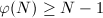,这就保证了为素数.
□
为Euler函数),从而有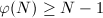,这就保证了为素数.
□
寻找的生成元(甚至只寻找模的一个二次剩余)都是非常困难的事情,目前还没有有效的确定性的方法.一个现实的问题是如果为伪素数,如何才能快速的找到Lehmer 检测中符合条件的,即的一个生成元呢？有一些步骤可以采用：
- 排除所有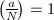的,这就排除了一半可能的!
- 从较小的
 开始检测,因为越小,失败的可能性越大.
开始检测,因为越小,失败的可能性越大.
 模的阶为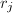,则以上两式表明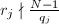且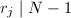,从而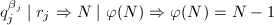.
□
模的阶为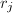,则以上两式表明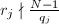且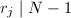,从而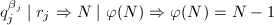.
□
 ).则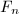为素数当且仅当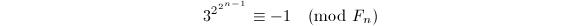
).则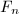为素数当且仅当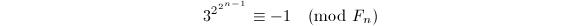
下面的定理让我们可以拥有不必完全分解的便利.
为素数, ,设模的阶是
,设模的阶是 ,则由条件有
,则由条件有 ,但.从而,,但.故有矛盾！
□
,但.从而,,但.故有矛盾！
□
 为奇数,h$" class="latex-inline" style="vertical-align: -1px" width="48" height="13">.如果存在使得则为素数.
为奇数,h$" class="latex-inline" style="vertical-align: -1px" width="48" height="13">.如果存在使得则为素数.
Lucas 伪素数检测与型检测
如果也是很难分解的,这里的方法就将分解的困难转移到上去.想法是与型检测是类似的, 不过要将Fermat小定理从 上到二次域的代数整数环上去，替代那里的的则是所谓Lucas序列.
上到二次域的代数整数环上去，替代那里的的则是所谓Lucas序列.
设 为无平方整数，记为二次域的代数整数环，我们熟知(参见[9]，P139)当时，而当时，
为无平方整数，记为二次域的代数整数环，我们熟知(参见[9]，P139)当时，而当时，
在中可以很容易地讨论同余的概念，称，若属于 在中生成的理想。记为在中的共轭，即，则在中我们有如下Fermat小定理的类比。
在中生成的理想。记为在中的共轭，即，则在中我们有如下Fermat小定理的类比。
上的Fermat小定理，二项展开及Euler二次剩余定理得
从而得到所要结论。
□
定理6中的乘幂不容易计算，为了有效地利用定理6的结论，我们引入Lucas序列的概念，Lucas序列实际上是一类简单的二阶递推序列。
 ，
， 模可逆，而，知，从而
模可逆，而，知，从而 均模可逆。又，而，可知，从而也模可逆。
均模可逆。又，而，可知，从而也模可逆。
由于模可逆，，从而 引理得证。
□
引理得证。
□
 ，这就完成了证明。
，这就完成了证明。
由上面的定理我们自然地得到Lucas伪素数的概念。
正如我们在Fermat检测和Euler检测中看到的，一个伪素数概念对应着一个合性检测算法，由此我们立即可以到得到Lucas伪素数检测算法。
 ，使得。若则输出
，使得。若则输出我们已经得到了Lucas伪素数合性检测，和型检测类似，我们还能够进行素性的确证。在这里，替代的分解的是的分解，我们可以看到下面的定理与定理1是多么的“形似”。
与型检测完全类似还可以得到以下结果.
 ,且,有素因子分解.若有为Lucas序列,,满足且则
,且,有素因子分解.若有为Lucas序列,,满足且则 为奇数,,.则为素数当且仅当
为奇数,,.则为素数当且仅当
概率性的检测方法
更加富有趣味的是素性的概率性检测方法,Knuth这样评价道概率性的算法[12]：“与其说算法重复地猜测错,倒不如说由于硬件的失灵或宇宙射线的原因,我们的计算机在它的计算中丢了一位.”概率性的算法使我们对传统的可靠性产生疑问：我们是否真的需要“素性”的严格确证？概率性算法最早由Solovay,Strassen[13]于1974年提出,Rabin-Miller的改进方法为Mathematica软件所采用. Baillie-PSW检测则综合了各种概率性检测方法，目前为止仍没有找到失败的反例，并且已经验证检测对于以下的整数均是正确的。
Solovay-Strassen检测
为合数,时,的概率不超过即可.设则,因此只需证明即可.
如果能分解为两个互素的非平凡因子 ,
, ,我们证明必有满足都有(由Jacobi符号的性质便知这是不可能的).若不然,由中国剩余定理找到
,我们证明必有满足都有(由Jacobi符号的性质便知这是不可能的).若不然,由中国剩余定理找到 满足且.则有且,而这与是矛盾的！
满足且.则有且,而这与是矛盾的！
如果为素数幂,则满足都有,再由Euler定理知道.而这也是不可能的. □
Rabin-Miller检测
Solovay-Strassen检测利用了Euler伪素数“并不多”的性质，使用随机给出的基多次重复进而给出高成功率的素性检测结果。同样的想法也可以施用于强伪素数与Lucas伪素数，后者便是著名的Rabin-Miller检测，后者则被运用到Baillie-PSW检测中。
Rabin-Miller检测可以看成我们在注1中的想法的一个具体化.
- 随机生成满足的整数;
- 顺次计算若计算到第
 步时有
步时有
- 且,输出可能为素数;
- 1$" class="latex-inline" style="vertical-align: -1px" width="38" height="13">且,输出可能为素数；
- s$" class="latex-inline" style="vertical-align: -1px" width="38" height="13">,输出为合数.
- 且,输出
遍,给出正确判断的概率1-4^{-k}$" class="latex-inline" style="vertical-align: -1px" width="70" height="15">.
的Rabin-Miller检测可能会遗漏许多基下的强伪素数，因此实践中的确需要使用多基的Rabin-Miller测试。例如使用前7个素数组成的多基Rabin-Miller测试，可以保证算法在以下均是有效的，而且这个数在用前8个素数为基的Rabin-Miller测试下没有改进。
Baillie-PSW检测
只是使用多基的Rabin-Miller测试可能得不到好的效率。Baillie[15]将基为2的Rabin-Miller检测与Lucas伪素数检测结合起来，得到更为有效的素数检测方法。Pomerance, Selfridge, Wagstaff在[7]中对的数进行了验证算法的正确性。尽管Pomerance[16]指出对于充分大的，必定有Baillie-PSW检测的反例，并且以30美元悬赏找出一个算法失败的反例（后来增加到620美元），不过反例至今没有找到，并且有经验估计认为第一个反例如果被找到的话，至少得有10000个十进位长度[17]。
下面我们正式给出Baillie-PSW检测。
 中使得的第一个数，选择很可能为完全平方数，此时可用算法5对进行平方检测以防止额外的计算，若不是平方数则继续寻找的过程。另外尝试过程中若计算得，则意味着必为合数，可直接终止计算。
中使得的第一个数，选择很可能为完全平方数，此时可用算法5对进行平方检测以防止额外的计算，若不是平方数则继续寻找的过程。另外尝试过程中若计算得，则意味着必为合数，可直接终止计算。
参考文献
[1]PRIMES is in P, Annals of Mathematics 160 (2004), no.2, 781 – 793.
[2]On Distinguishing Prime Numbers from Composite Numbers, The Annals of Mathematics 117 (1983), no.1, 173--206.
[3]Primality Testing and Jacobi Sums, Mathematics of Computation 42 (1984), no.165, 297--330.
[4]Almost all primes can be quickly certified, Proceedings of the eighteenth annual ACM symposium on Theory of computing, 1986, 316 - 329.
[5]Elliptic curves and primality proving, Mathematics of Computation 61 (1993), 29 - 68.
[6]A Course in Computational Algebraic Number Theory, Springer Verlag, 1993.
[7]The Pseudoprimes to $25 \cdot 10^9$, Mathematics of Computation 35 (1980), no.151, 1003--1026.
[8]Fermat numbers and Mersenne numbers, Mathematics of Computation 18 (1964), 146-148.
[9]代数学引论, 高等教育出版社, 北京, 2000.
[10]An Extended Theory of Lucas' Functions, The Annals of Mathematics 31 (1930), no.3, 419--448.
[11]A Really Trivial Proof of the Lucas-Lehmer Test, The American Mathematical Monthly 100 (1993), no.4, 370--371.
[12]The art of computer programming, volume 2 (3rd ed.): seminumerical algorithms, Addison-Wesley Longman Publishing Co., Inc., Boston, MA, USA, 1997.
[13]A Fast Monte-Carlo Test for Primality, SIAM Journal on Computing 6 (1977), no.1, 84-85.
[14]Probabilistic algorithm for testing primality, Journal of Number Theory 12 (1980), no.1, 128-138.
[15]Lucas Pseudoprimes, Mathematics of Computation 35 (1980), no.152, 1391 - 1417.
[16]Are There Counterexamples to the Baillie-PSW Primality Test?, 1984, http://www.pseudoprime.com/dopo.pdf.
[17]Re: Baillie-PSW - Which variant is correct?, 2004, http://groups.google.com/group/sci.crypt/msg/48ec324b9fc9f866.